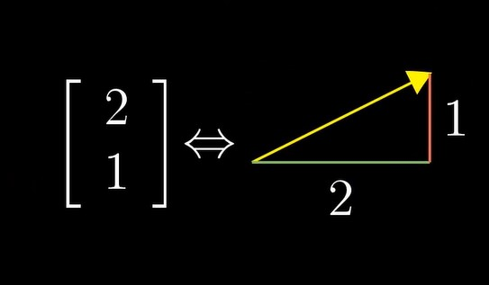
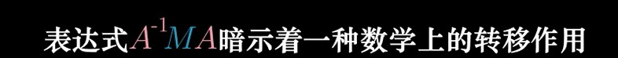

什么是向量
从一个计算机专业学生的角度来说,向量这个词给我的第一联想便是C++中的vector,如图中左侧便是一个含有两个元素的vector,也代表了这是一个二维的向量,两个值不能变换位置,因为所代表的意义不同,而右侧是从物理学角度出发理解的向量.而从数学角度来说,我们对于向量的理解需要融合这两种观点. 
线性组合’空间与基
线性组合
以二维向量为例,当我们把坐标堪称标量时,可以看成是在所对应坐标轴上对于基向量的拉伸或压缩之和.而当我们改变所选择的标量(即坐标轴时),我们可以得到任何一个二维向量(非共线,非零).这种向量之间的运算也可以叫做对于各自基向量的线性组合 
线性相关
当有一个向量(u)不影响总向量张成的空间时,那他们便是线性相关的.同时u可以表示为其他向量的线性组合,因为它落在其他向量张成的空间;同时如果每个向量都影响了张成的空间,那么他们是线性无关的
矩阵与线性变化
线性变化的条件:1.原点不动 2.直线仍是直线. 而如果我们要考虑吧这之间的变化,只需对于基向量进行起与终的变换比较.
矩阵只是一个记号,含有描述了一个线性变化的信息.我们可以把矩阵解读为对空间的一种特定变换.而两个矩阵的相乘便是两种线性变换相继作用(从右往左)
行列式
线性变换改变面积的比例叫做这个变换的行列式.而当出现负数时,对于二维空间来说便是将整个空间翻转了
逆矩阵,列空间
A的逆乘以A相当于一个恒等变换,当找到逆时,便可以将方程两边同乘以逆以求解.行列式不为0的意义是,这个向量并不会降维.对于秩的理解是如果变换后的向量是n维的,那么它的秩为n,秩也代表着列空间的维数.
基变换
相当于矩阵乘法,假设这里有两种情况AB,我们要求A在B下的表示,一个特定矩阵所作的就是将B的基向量通过线性变换转换为A下基向量,而逆作用就是取这个矩阵的逆. 外侧的两个矩阵代表的是视角的转换,这是同一个转换,只不过是从另一个角度看的
特征向量与特征值
特征向量指的是在变换过程中,并没有离开向量所张成的空间,就是说只被拉伸或者压缩了,而特征值指的是所对应的特征向量在这次变换中被拉伸/压缩的比例
抽象向量空间
线性的定义:
- 可加性:f(v+w)=f(v)+f(w)
- 成比例:f(cv)=cf(v)
求一个向量变换后的结果相当于求出变换后的基向量以相同方式进行线性组合的结果